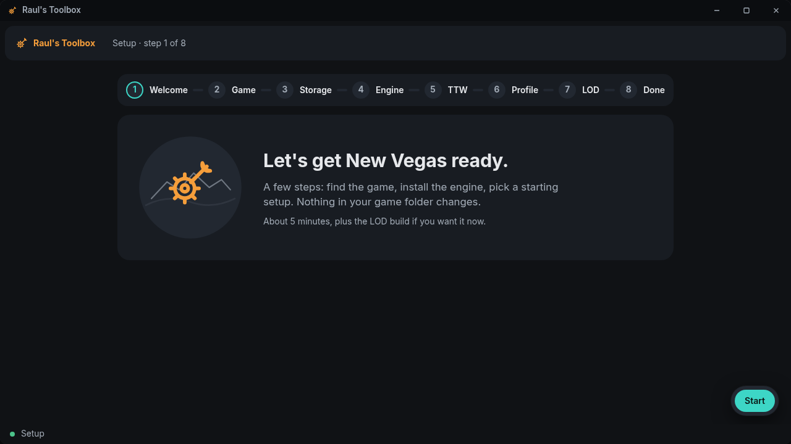
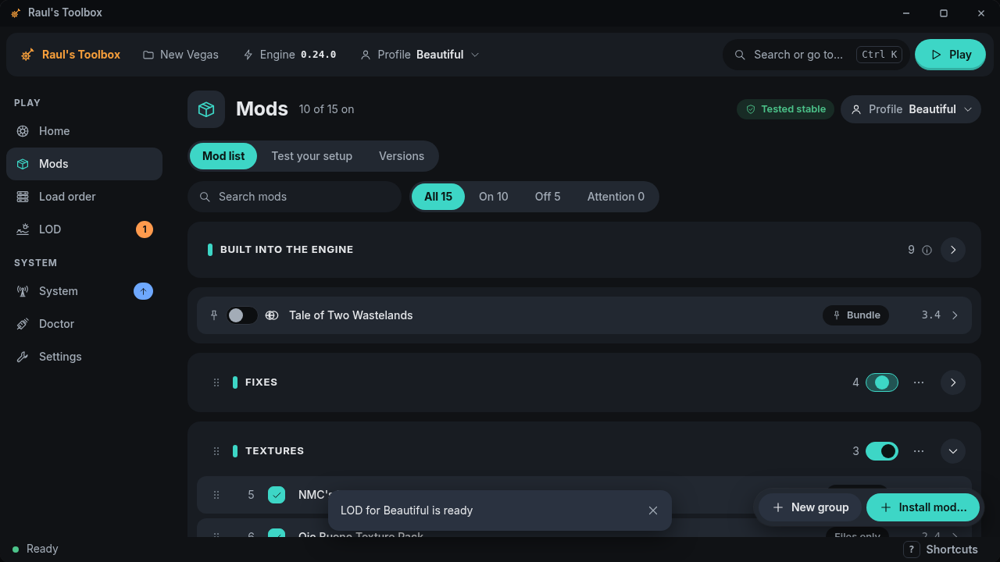

Using the Toolbox
This page goes through the pages of raul's window. It keeps two things apart:
- Current release: what the latest release does today.
- Planned design: what the clickable demo shows. The demo is the design standard for the next versions of the window. Its data is made up and it does not touch a game.
Try the planned design yourself in the guided tour.
At a glance
| Page | Current release | Planned design |
|---|---|---|
| Setup | Five steps | Eight steps |
| Home | Yes | Yes, with a profile switcher |
| Mods | Yes | Yes, with groups, test tab and versions |
| Load order | Yes | Yes, with missing master warnings |
| LOD | Yes | Yes, with a quality choice and fine-tuning |
| System | Engine and update page | Updates for all parts in one place |
| Doctor | Not yet | Yes |
| Settings | Yes | Yes |
| Profiles | Not yet | Yes |
| Test your setup | Not yet | Yes |
Setup
Current release. Five steps: find New Vegas, choose whether you want Tale of Two Wastelands, make the folder for your mods, run a quick check, done.
Planned design. Eight steps: Welcome, Game, Storage, Engine, TTW, Profile, LOD and Done. Each step shows what was found, what went wrong (game not found, wrong folder, low space) and a busy state. If you close the window, setup carries on where it stopped.

Home
Current release. A check list for the game folder, storage, Tale of Two Wastelands, load order and distant view, and a Play button. Play checks your setup first.
Planned design. One column: the check list, the active profile, your play time and when you last played. A badge on the sidebar tells you when something needs doing. Play always rechecks the setup, and tells you what is wrong in plain words.
Mods
Current release. Install a mod from its archive. A mod with an installer asks its questions in the window. Turn mods on and off, move them up and down, remove them, and undo the last change.
Planned design. Mods sit in groups you name. Drag a mod into another group, or move it with the keyboard. A banner reminds you when this exact setup has not been tested. The page has three views: Mod list, Test your setup and Versions.

Test your setup (planned design)
Three tools on the Mods page:
- Stability test: loads 40 places and travels between them, about 20 minutes. If it passes, the setup is marked as tested stable.
- Benchmark: the frame rate, with a history over time.
- Location pictures: the same spot at the same time of day, side by side, before and after a change. Scroll to zoom and drag to look around.
A filtered log shows warnings and errors.
Versions (planned design)
Every change to your mods, order or game settings makes a version. You can go back to an earlier one, or forward again. The list stays.
Load order
Current release. Sorts your plugins with the LOOT masterlist. raul shows every move and the masterlist's messages first, and changes nothing until you press Apply.
Planned design. The same preview, plus a warning when a plugin needs a master that is not on. The warning also shows on Home and in the sidebar.
LOD
LOD is what you see in the distance. Mods change the world, but the game's own far view stays the old one.
Current release. Generates the distant land, objects and trees for exactly your load order. The result is one mod,
Generated LOD (<profile>), and a new run replaces it. A settings page changes what is built.
Planned design. A quality choice (for example Balanced or High), a state that says when the LOD is out of date because mods changed, and fine-tuning for texture size and distance.
Profiles (planned design)
A profile is a whole setup: mods on, order, settings, LOD and tests. Installed mods and groups are shared, so you install a mod once. Switch, duplicate, rename or delete a profile from the top bar.
Tale of Two Wastelands
Current release. TTW is built from your own Fallout 3 and New Vegas copies and the installer file from the TTW site. raul checks the sources, shows where the output goes and how much space it needs, installs, and adds TTW as one mod.
Planned design. The same four steps, started from the Mods page when TTW is shown as Not added.
System (planned design)
Checks for updates when you open it. One Update button; every part that changes says it will be updated, with a list of changes. Engine builds are listed here, and you can switch between them.
Doctor (planned design)
One button runs every check: game folder, storage, engine, TTW, mods, load order, LOD and whether the setup was tested. Each problem has a button that fixes it or takes you to the right page.
Settings
Game folders, the TTW installer file, raul's storage folder and the look of the window (including a high contrast mode). The planned design adds start-setup-again, reduced motion and larger text.
Keyboard
The planned design has a search box on Ctrl+K that jumps to any page, and a list of shortcuts on the question mark key. Enter confirms a dialog and Escape cancels it.
The same from the command line
Every page also exists as a command. See Using raul from the command line and the longer tour of the current window.